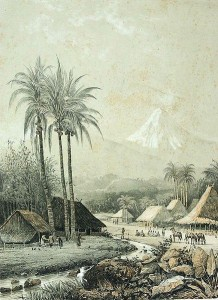

Sejarah Dan Legenda Gunung Bromo . Pada masa itu berdasarkan cerita sejarah dan legenda bahwasanya Gunung Bromo berasal dari nama Brahma yaitu Gunung yang dianggap Suci oleh masyarakat suku tengger. Kemudian orang jawa menyebutnya Gunung Bromo. Suku tengger adalah masyarakat asli yang berada di kawasan kaki gunung bromo semeru yang berasal dari penduduk pribumi kerajaan majapahit.
Sejarah Dan Legenda Gunung Bromo Purba Pada zaman dahulu kala ketika kerajaan majapahit mengalami serangan dari berbagai daerah sehingga penduduk pribumi kerajaan majapahit melarikan diri untuk mencari tempat tinggal baru demi keselamatan hidup mereka dan pada akhirnya mereka terpisah menjadi 2 bagian yaitu pertama menuju kawasan gunung bromo dan yang kedua menuju Pulau Bali. Karena berasal dari lokasi yang sama sehingga ke 2 tempat ini sampai sekarang mempunyai kesamaan akan budaya, agama, adat istiadat yaitu menganut kepercayaan agama Hindu.
Sejarah Dan Legenda Gunung Bromo Jawa TimurMasyarakat Suku Tengger yang ada di kawasan Gunung Bromo berasal dari Legenda Roro Anteng dan Joko Seger yang diyakini sebagai asal usul nama Tengger itu. “Teng” akhiran nama Roro An-”teng” dan “ger” akhiran nama dari Joko Se-”ger” dan Gunung Bromo sendiri dipercaya sebagai gunung suci. Mereka menyebutnya sebagai Gunung Brahma. orang Jawa kemudian menyebutnya Gunung Bromo. Itulah sejarah dan legenda terbentuknya gunung bromo purba.

Asal usul Suku Tengger berasal dari cerita rakyat atau legenda ” Joko Seger “ Dan “Rara Anteng” .Dari sebuah pertapaan, istri seorang Brahmana / Pandhita baru saja melahirkan seorang putra yang fisiknya sangat bugar dengan tangisan yang sangat keras ketika lahir, dan karenanya bayi tersebut diberi nama ” Joko Seger “.
Di tempat sekitar Gunung Pananjakan, pada waktu itu ada seorang anak perempuan yang lahir dari titisan dewa. Wajahnya cantik dan elok. Dia satu-satunya anak yang paling cantik di tempat itu. Ketika dilahirkan, anak itu tidak layaknya bayi lahir. Ia diam, tidak menangis sewaktu pertama kali menghirup udara. Bayi itu begitu tenang, lahir tanpa menangis dari rahim ibunya. Maka oleh orang tuanya, bayi itu dinamai “Rara Anteng”.
Dari hari ke hari tubuh Rara Anteng tumbuh menjadi besar. Garis-garis kecantikan nampak jelas diwajahnya. Termasyurlah Rara Anteng sampai ke berbagai tempat. Banyak putera raja melamarnya. Namun pinangan itu ditolaknya, karena Rara Anteng sudah terpikat hatinya kepada Joko Seger.
Suatu hari Rara Anteng dipinang oleh seorang bajak yang terkenal sakti dan kuat. Bajak tersebut terkenal sangat jahat. Rara Anteng yang terkenal halus perasaannya tidak berani menolak begitu saja kepada pelamar yang sakti. Maka ia minta supaya dibuatkan lautan di tengah-tengah gunung. Dengan permintaan yang aneh, dianggapnya pelamar sakti itu tidak akan memenuhi permintaannya. Lautan yang diminta itu harus dibuat dalam waktu satu malam, yaitu diawali saat matahari terbenam hingga selesai ketika matahari terbit. Disanggupinya permintaan Rara Anteng tersebut.
Pelamar sakti tadi memulai mengerjakan lautan dengan alat sebuah tempurung (batok kelapa) dan pekerjaan itu hampir selesai. Melihat kenyataan demikian, hati Rara Anteng mulai gelisah. Bagaimana cara menggagalkan lautan yang sedang dikerjakan oleh Bajak itu? Rara Anteng merenungi nasibnya, ia tidak bisa hidup bersuamikan orang yang tidak ia cintai. Kemudian ia berusaha menenangkan dirinya. Tiba-tiba timbul niat untuk menggagalkan pekerjaan Bajak itu.
Rara Anteng mulai menumbuk padi di tengah malam. Pelan-pelan suara tumbukan dan gesekan alu membangunkan ayam-ayam yang sedang tidur. Kokok ayam pun mulai bersahutan, seolah-olah fajar telah tiba, tetapi penduduk belum mulai dengan kegiatan pagi.
Bajak mendengar ayam-ayam berkokok, tetapi benang putih disebelah timur belum juga nampak. Berarti fajar datang sebelum waktunya. Sesudah itu dia merenungi nasib sialnya. Rasa kesal dan marah dicampur emosi dan pada akhirnya Tempurung (Batok kelapa) yang dipakai sebagai alat mengeruk pasir itu dilemparkannya dan jatuh tertelungkup di samping Gunung Bromo dan berubah menjadi sebuah gunung yang sampai sekarang dinamakan Gunung Batok.
Dengan kegagalan Bajak membuat lautan di tengah-tengah Gunung Bromo, suka citalah hati Rara Anteng. Ia melanjutkan hubungan dengan kekasihnya, Joko Seger. Kemudian hari Rara Anteng dan Joko Seger menjadi pasangan suami istri yang bahagia, karena keduanya saling mengasihi dan mencintai.
Pasangan Rara Anteng dan Jaka Seger membangun pemukiman dan kemudian memerintah di kawasan Tengger dengan sebutan Purbowasesa Mangkurat Ing Tengger, maksudnya “Penguasa Tengger Yang Budiman”. Nama Tengger diambil dari akhir suku kata nama Rara Anteng dan Jaka Seger. Kata Tengger berarti juga Tenggering Budi Luhur atau pengenalan moral tinggi, simbol perdamaian abadi.
Dari waktu ke waktu masyarakat Tengger hidup makmur dan damai, namun sang penguasa tidaklah merasa bahagia, karena setelah beberapa lama pasangan Rara Anteng dan Jaka Tengger berumahtangga belum juga dikaruniai keturunan. Kemudian diputuskanlah untuk naik ke puncak gunung Bromo untuk bersemedi dengan penuh kepercayaan kepada Yang Maha Kuasa agar karuniai keturunan.
Tiba-tiba ada suara gaib yang mengatakan bahwa semedi mereka akan terkabul namun dengan syarat bila telah mendapatkan keturunan, anak yang bungsu harus dikorbankan ke kawah Gunung Bromo, Pasangan Roro Anteng dan Jaka Seger menyanggupinya dan kemudian didapatkannya 25 orang putra-putri, namun naluri orang tua tetaplah tidak tega bila kehilangan putra-putrinya. Pendek kata pasangan Rara Anteng dan Jaka Seger ingkar janji, Dewa menjadi marah dengan mengancam akan menimpakan malapetaka, kemudian terjadilah prahara keadaan menjadi gelap gulita kawah Gunung Bromo menyemburkan api.
Kusuma anak bungsunya lenyap dari pandangan terjilat api dan masuk ke kawah Bromo, bersamaan hilangnya Kesuma terdengarlah suara gaib :”Saudara-saudaraku yang kucintai, aku telah dikorbankan oleh orang tua kita dan Hyang Widi menyelamatkan kalian semua. Hiduplah damai dan tenteram, sembahlah Hyang Widi. Aku ingatkan agar kalian setiap bulan Kasada pada hari ke-14 mengadakan sesaji yang berupa hasil bumi dan di persambahkan kepada Hyang Widi asa di kawah Gunung Bromo. sampai sekarang kebiasaan ini diikuti secara turun temurun oleh masyarakat Tengger dan setiap tahun diadakan upacara Kasada di Poten lautan pasir dan kawah Gunung Bromo.
Gunung Bromo begitu mempesona sehingga banyak para wisatawan dari berbagai negara tertarik untuk bisa menikmati keindahan alamnya. Namun untuk Anda yang akan berlibur ke gunung bromo harus tahu larangan apa saja yang harus ditaati ketika pergi ke bromo.
Menurut kepercayaan masyarakat Tengger, seseorang dilarang melangkahi pawon. Pawon sendiri merupakan alat untuk memasak dalam budaya Suku Tengger. Jika seseorang melangkahi pawon, dia diyakini akan kehilangan jodohnya atau jodohnya akan direbut oleh orang lain.
Larangan ini juga patut kamu ketahui karena jika tidak, itu bisa berakibat buruk pada diri kamu. Ketika kamu berwisata ke Gunung Bromo, jangan coba-coba membawa pulang batu bata dari tempat tersebut. Jika kamu melakukannya, ‘penghuni Bromo’ diyakini akan marah dan dapat membawa nasib buruk bagimu.
Meski terdengar absurd, kamu nggak boleh buang air menghadap ke arah Gunung Bromo. Hal ini dipercaya akan membawa nasib buruk bagi pelakunya, karena aktivitas itu dinilai melecehkan ‘penghuni’ Gunung Bromo.
Datang ke Bromo belum lengkap jika belum mampir ke Pura Luhur Poten. Tapi ingat, jika kamu ingin berkunjung ke pura ini, dilarang keras untuk melakukan tindakan ataupun bertutur yang nggak pantas.
Selain tidak diperkenankan untuk bertindak, berbicara, atau berpikir hal yang nggak pantas di dalam pura, wanita yang sedang haid juga dilarang untuk masuk ke area suci tersebut. Jadi, jika kamu sedang dalam kondisi tersebut, sebaiknya jangan memaksakan diri untuk masuk.
Jika berminat pergi ke bromo dalam waktu dekat dan belum tahu dimana letak gunung bromo, tidak perlu khawatir karena kami menyediakan paket wisata bromo dari malang dengan pilihan paket tour bromo midnight dan paket tour bromo 2 hari 1 malam. Akses jalur ke bromo juga bisa dilalui dari kota Surabaya dan kami juga menyediakan paket tour bromo dari surabaya.
Begitulah Sejarah Dan Legenda Gunung Bromo ” Joko Seger “ Dan “Rara Anteng” menjadi cerita rakyat yang membudaya bagi masyarakat suku tengger di kawasan gunung bromo. Cerita tentang Sejarah Dan Legenda Wisata Gunung Bromo dengan peran ” Joko Seger “ Dan “Rara Anteng” sangat populer bagi wisatawan Liburan Ke Bromo.